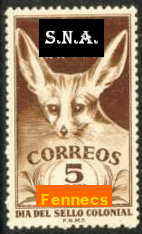
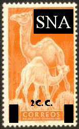
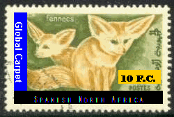

|
Created:
01/02/01. Revised: 01/07/06. |
|
Spanish North Africa, contrary to popular belief, does in fact exist. It can be found somewhere on the northern Moroccan coast of Africa, west of Portuguese North Africa and east of both Minnackers and Hawaiian North Africa.
Spain felt the need to subdivide Spanish Morocco and Spanish Sahara after many years in rebel infighting. Spanish North Africa, a political enclave, was allowed self-rule as a result.
The capital city of Spanish North Africa is Ciudad de Leon and is on the northernmost coast of SNA.
Since self-rule has been chosen by the SNA population, SNAPO (Spanish North African Post Office) has attempted to infiltrate PNA and has been somewhat successful. Sheets of PNA stamps were supposed overprinted on the infamous PNA "Republica" overprints.
Attack fennecs have been sent out to Morocco in an attempt to stop registered mail from leaving Morocco. This was done to help the Global Carpet Rate and Priority Fennec Rate get off the ground throughout SNA. Fortunately, no postal officials have been hurt badly and most registered mail from Morocco has been halted.
Recently, Mauritanian rebels in the Sahara have been overcome by the dreaded Sopwith Camel brigade of SNA airmail runs. Certain Mauritaninan CTO (Cancelled To Order) stamps have been overprinted by SNAPO.
...which brings us to today.
Many people have requested stamps of SNA for their collections. Unfortunately, these stamps are scarcer than the queen's jewels, even though they are printed in extraordinary numbers and varieties. It is rumored that the local, indigenous population of SNA hoard these stamps for the future, where they are told they will be much more valuable than they are today.
SNA Local Issues
Here are a few Spanish North Africa "local" issues. These stamps have been overprinted due to paper shortage in SNA. Since there are few trees left in the country, SNAPO staff pillage and plunder neighboring countries for both stamps to overprint and ideas to manipulate.
Although not yet a member of U.P.U., SNA strives to outperform other U.P.U. countries in number of issues and varieties of issues per year.

5 Fennec Chip on Ifni Semi-Postal of 1951
According to local folklore, this is the first local stamp attempted in the region currently known as Spanish North Africa.
This was the Priority Fennec Rate in 1955. Counterfeits of this issue with "Fennecs" inverted are known. They are PNA propaganda.
(ed: The fennec is one of the mascots of SNA and is highly respected with the rapid (but sometimes erratic) delivery of mail.)
The Unapproved Speedy Gonzales Essay
In 1958, SNA tried to promote a new mascot, due to the fennecs erratic behavior, but apparently it did not win over the masses. This mascot was to be called "Speedy Gonzales", but copyright infringement wars with Looney Toons & Warner Brothers followed the the unveiling. It never truly got off the drawing board.
The child's drawing above has been kept in an effort to maintain, intact, the rather ragged history of SNA.
SNA was then very deeply in debt. Fortunately...

Donated Spanish Sahara Semi-Postal in 1960s
Some time in the mid 60s, Spain comes to the rescue with some misprinted, misaligned and sometimes blurry remainders of the Spanish Sahara camel Semi-Postals. Spain stated no reimbursement was necessary.
A few nice copies of this overprint have been found with missing periods. These were not officially released and are considered overprinter's waste.
SNA attempted, at this time, to change the monetary exchange system in the country:
1 Fennec Chip Local Mail Rate
5 Fennec Chips Priority Fennec Rate
10 Fennec Chips Global Carpet Rate - Europe, Russia
2 Camel Chips African Rate
10 Camel Chips International Global Carpet Rate
Where:
40 Fennec Chips = 1 Camel Chip
30 Camel Chips = 1 Ostrich Plume
10 Ostrich Plumes = 1 Grand Poo-Bah
Border excurscions by the FDC (Fennec Desert Corps) and The Sopwith Camels from the Dromedrome obtained many stamps from neighboring territories, espcially Minnackers, PNA and Mauritania.

1999 Mauritanian CTO Rebel Issues
The above stamp, representing the Global Carpet Rate value of 10 Fennec Chips, was overprinted on sheets of Mauritanian CTO pictorials. These must've been remainder issues that got into the hands of rebel forces in the Sahara. The fennecs shown on the stamp above are close relatives to SNA postal fennecs and actually helped in the rebel raids.
When Window Clerk #1 cancelled the mail in Ciedade de Leon, the Global Carpet overprint was obliterated, thereby rendering the stamp unusable in the future. No known varieties exist. Rumors abound of other values in the set.
Recent SNA Issues
In the near future, other, more recent SNA issues will be displayed. Please stay tuned for this.
Tracy Barber
(Keeper of the Royal SNA Cancellation Devices)
Page by Tracy Barber. Thanks, Tracy!
|
Created:
01/02/01. Revised: 01/07/06. |
|